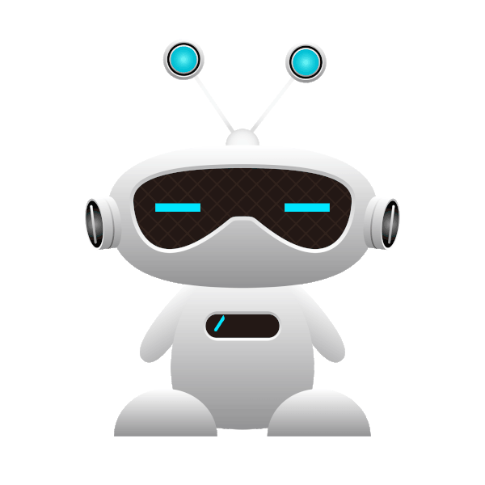
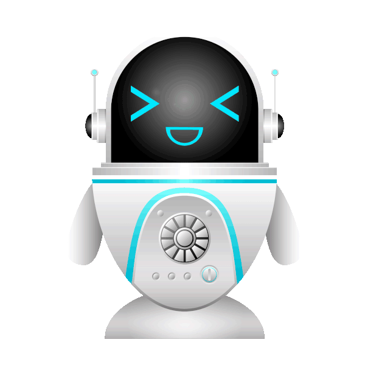
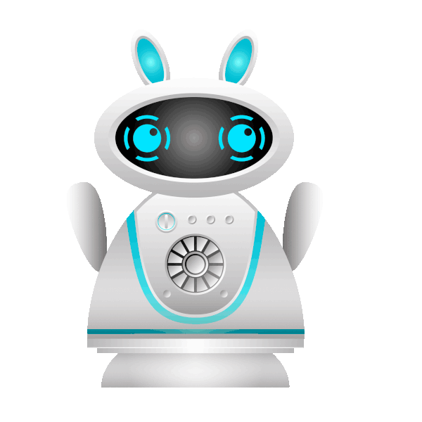

チーム紹介

東京 太郎 - 代表取締役 CEO

IT 一郎 - CTO

HAL 花子 - CMO
💻 会社情報
| 🏢 会社名 | ヨビパソコンテクノロジー株式会社 |
|---|---|
| 🌐 Company Name | YobiPasokon Technology Co., Ltd. |
| 📅 設立年月日 | 2008年4月1日 |
| 📍 所在地 | 〒160-0023 東京都 新宿区西新宿1丁目7-3 |
| 💰 資本金 | 5,000万円 |
| 👨💼 代表取締役 | 東京 太郎 |
| 📧 メールアドレス | info@yobipc.com |
| 📞 電話番号 | +81-80-1234-5678 |
| 👥 従業員数 | 50名（2025年現在） |
| 💼 事業内容 | AI技術開発、ITソリューション提供、PC販売およびカスタマイズ |
| 🤝 主要取引先 | ABC株式会社、XYZソフトウェア、グローバルITソリューションズ |
💻 会社の歴史
- 📅 2008年: ヨビパソコンテクノロジー株式会社 設立。創業時はPCパーツの販売からスタート。
- 💻 2010年: 自社製造ノートPC「YobiBook」シリーズをリリースし、国内市場で成功。
- 🤖 2012年: 初のAI搭載PC「Yobi AI-Book」発表。業界初のAIパーソナルアシスタント機能を搭載。
- 🌐 2014年: 日本全国にサービス拠点を拡大、サポートネットワークを強化。
- ☁️ 2016年: クラウドサービス事業開始、法人向けITソリューション提供を本格化。
- 🌍 2018年: グローバル展開を開始、アジア・北米市場へ進出。
- 📊 2019年: 海外市場進出により、年間売上が前年比150%増加。
- ♻️ 2021年: 環境配慮型PC「Yobi Eco-Line」シリーズ発売。SDGsに貢献。
- 🤖 2024年: AIカスタマーサポートシステム「Yobi Assist」導入、顧客満足度向上。
- 🛒 2025年: 次世代AIショッピングシステム & バーチャルストア開発。世界初のAI主導オンラインショッピング体験を提供。
事業内容
- 💻 パソコンおよび電子製品の販売
ノートPC・デスクトップ・タブレット・周辺機器を提供。ゲーミングPCや法人向け高性能モデルも取り揃えています。 - ⚙️ カスタマイズ & ITソリューション
個人・法人向けに最適なスペックのPCを構築。企業向けクラウドサービスやITインフラ整備もサポート。 - 🔧 アフターサポート & メンテナンス
修理・保証・オンラインサポート・出張修理に対応。AIを活用した自動診断システムも提供。 - 🤖 AIショッピング & オンライン販売
AIレコメンド機能を活用し、最適な製品を提案。B2C・B2B向けオンラインストアを運営。 - 🌍 リサイクル & 環境配慮
PC・電子機器の下取り・リファービッシュ販売を実施。持続可能な社会の実現に貢献。
経営理念
私たちは、テクノロジーと人間の調和を追求し、信頼されるパートナーとしてお客様の生活をより豊かにします。
価値観
- 📌 お客様第一主義： 常にお客様の視点に立ち、期待を超える価値を提供します。
- 🚀 イノベーションの推進： 技術革新を通じて、時代の一歩先を行く製品とサービスを提供します。
- 🌍 持続可能な未来： 環境保護と社会貢献を意識し、持続可能な社会の実現に寄与します。
所在地地図
📍 私たちのオフィスは東京都新宿区の中心に位置しています。お気軽にお立ち寄りください！
🏢 住所: 〒160-0023 東京都新宿区西新宿1丁目7-3
📞 お問い合わせ: +81-80-1234-5678